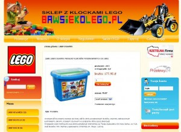
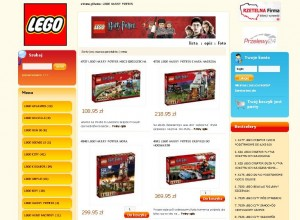
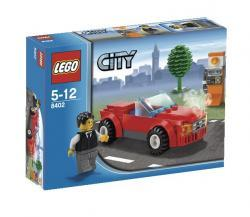

*Cezary Siwek, właściciel sklepu Bawsiekolego.pl to dorosły miłośnik klocków LEGO. Pomysł na własną działalność to w jego przypadku owoc wieloletniej fascynacji najlepszymi zabawkami na świecie. Dziś chętnie dzieli się swoimi spostrzeżeniami na temat rynku e-commerce w Polsce, broniąc wartości małych sklepików w oceanie sieciowych hipermarketów. Bawsiekolego.pl powstał na platformie Shoper.
Informacja o sklepie:
- Profil sklepu (czym się zajmuje?): Sprzedaż detaliczna oraz hurtowa zabawek LEGO
- Profil klienta: Rodzice dzieci w wieku 2-14 lat, dziadkowie, fani LEGO
- Data startu: Maj 2008 r.
- Główna przewaga nad innymi sklepami (oferty specjalne): Sklep prowadzony z pasją
- Na co powinien zwrócić uwagę klient odwiedzający sklep: Na rzetelność i szczegółowość opisów produktów, informacje dodatkowe
- Czy firma prowadzi również handel tradycyjny: Tak, dwa sklepy stacjonarne.
- Dynamika rozwoju (% zmiana sprzedaży w porównaniu z rokiem poprzednim): +100%
- Złota zasada e-commerce wg Bawsiekolego.pl: W prowadzeniu sklepu internetowego kluczowe są starania o to, by oferta sklepu przedstawiała faktyczne stany magazynowe, by klient mógł kupić towar, na który natrafi w naszym sklepie. Ważna jest również szybkość realizacji zamówień oraz zawsze miła i kompleksowa obsługa.
Wiele pomysłów na sklepy internetowe wyrasta z życiowych pasji. Czym dla Pana są klocki LEGO ? fascynacją, która przetrwała czas dzieciństwa czy może po prostu kultową zabawką, która dobrze się sprzedaje?
Faktycznie sprawdziło się Pani założenie, że sklep może być wyrazem życiowej pasji, hobby. W moim przypadku tak właśnie jest. Miałem to wielkie szczęście, że w dzieciństwie poznałem i pokochałem klocki LEGO. Wtedy marzyłem o pracy w firmie LEGO. Dziś mogę powiedzieć, że poniekąd marzenie się spełniło, bo naprawdę jestem bardzo blisko spraw o tematyce LEGO. Zaczynając pracę z LEGO nie zakładałem wielkich zysków. Sklep miał dawać radość mi, mojej rodzinie. Tą pasją chciałem się również dzielić z innymi, umożliwiając im zakup kultowych klocków w przystępnej cenie.
{kind=link}
Świat LEGO składa się z niewyobrażalnej liczby konstrukcji. W jaki sposób przygotowywana jest oferta sklepu? Opiera się ona na osobistych upodobaniach czy raczej związana jest z popularnością danych zestawów?
Katalog LEGO to faktycznie wiele produktów. Na szczęście są one pogrupowane tematycznie. Oferta sklepu jest podzielona na tzw. serie LEGO. Katalog ułożony jest alfabetycznie, a poszczególne zestawy prezentowane według rosnącego numeru seryjnego. Chcemy, aby każdy zestaw LEGO miał równe szanse ;). Nie ukrywam, że gdy Klient skontaktuje się ze mną osobiście, proponuję mu szczególnie polecane zestawy. Jeśli chodzi o zestawy spoza głównego katalogu LEGO, istnieje możliwość realizacji zamówień specjalnych. Czasem sprowadzamy takie zestaw – sprzedają się błyskawicznie.
W jaki sposób promują Państwo swoją działalność wśród klientów? Czy podejmują się Państwo przeprowadzania jakichś niestandardowych akcji?
Przede wszystkim staramy się, aby Klienci, którzy coś u nas kupili chętnie wracali do nas w przyszłości. Pracujemy wciąż nad atrakcyjnością strony, tak by ?została w pamięci? osób odwiedzających. Często do zakupów dołączamy miły upominek. Dla naszych stałych Klientów prowadzimy KLUB FANA LEGO, premiujemy prezentami zakupy oraz polecenie naszego sklepu. Mamy stały kontakt mailowy z naszymi Klientami.
{kind=link}
Jak ocenia Pan swoje początki z perspektywy czasu? Od jakich błędów nie udało się Panu uchronić a z jakich sytuacji wyszedł Pan obronną ręką?
To pytanie rzeka. Muszę jednak stwierdzić, że gdy zaczynałem prowadzenie swojej działalności, na rynku, także internetowym, nie było tak ogromnej ?konkurencji? . Wszystko nabrało wielkiego tempa w tym krótkim okresie dwóch ostatnich lat. Dziś odradziłbym każdemu rozpoczęcie tego biznesu. I to nie dlatego, żebym bał się nowej konkurencji, tylko dlatego, że w handlu internetowym zapanował straszny chaos i bezprawie. Wystarczy stu sprzedawców, którzy sprzedadzą po trzy produkty ?na czarno? i już mamy pełną ofertę LEGO w sieci tańszą o kilkadziesiąt procent. Szanuję i podziwiam sklepy legalnie działające, które wspierają gospodarkę kraju oraz ściśle współpracują z rodzimymi dystrybutorami.
Wydaje mi się, że dużym błędem było swego czasu inwestowanie w wiele integracji z innymi portalami. Uległem namowom, że tam gdzie są internauci, tam są Klienci LEGO. Pieniądze zainwestowane w ten projekt wydają się nie do odzyskania.
Jakie standardy obsługi klientów zostały przyjęte w prowadzonej przez Pana działalności?
Szybko. Miło. Kompleksowo. Fachowo. To Klient jest najważniejszy, bo tym Klientem tak na prawdę jest kilkuletnie dziecko, którego cierpliwość kończy się wraz z wybraniem zabawki z katalogu czy ze strony internetowej.
W jakim kierunku będzie Pańskim zdaniem podążał polski e-commerce? Czy nastąpi prognozowana niedawno przez ?Rzeczpospolitą? konsolidacja rynku?
Polski handel internetowy, jak wiele dziedzin, które gwałtownie się rozwinęły w naszym kraju, jest w chwili obecnej dzikim bazarem, gdzie dzieją się rzeczy niewyobrażalne. Jak wiemy każdego dnia przez Internet przepływają miliony złotych i tylko niewielka część znajduje swoje odbicie w księgach podatkowych potencjalnych handlowców. Takie działania bardzo mocno podcinają skrzydła firmom legalnie prowadzącym działalność. Jednak wiem, że jest wiele firm, które dołożą wszelkich starań, nawet kosztem zysków, by przetrwać ten zły okres. Jak wspomniałem, nie wszyscy robią zły biznes, ale wystarczy takich stu w mojej branży na przykład. Co do konsolidacji, to myślę, że takie sklepy jak mój obronią się i będą miały szansę pozostać takimi słodkimi salonikami dla prawdziwych miłośników klocków LEGO, a nie wielkimi hipermarketami w Sieci. Bo z pewnością Klienci nie zostaną docenieni w hipermarkecie a w ?swoim? sklepiku będą zawsze mile widziani i będą mogli mieć poczucie, że to ?ich sklep?, czego życzę naszym Klientom i sobie.
{kind=link}
{kind=link}
{kind=link}
{kind=link}
{kind=link}
{kind=link}